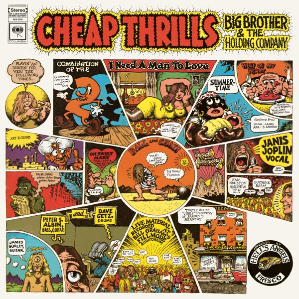
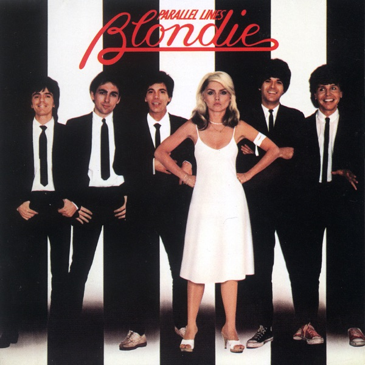
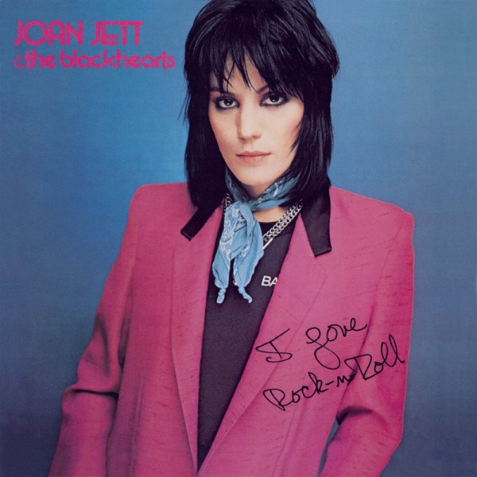
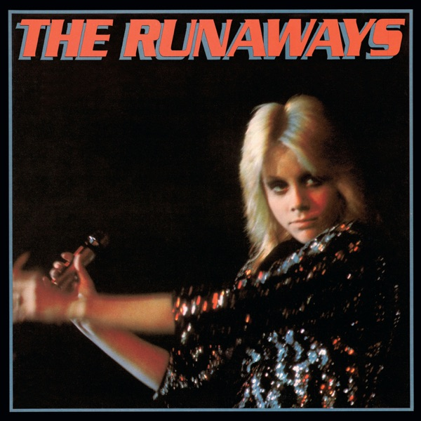

GROOVE.
글 비바체
한국인디의 새로운 물결
A에서 C까지, 무대는 전유물이 아니다




Ⅰ. Arise - 60's to 80's 록은 태어날 때부터 저항이었다 — 개막을 알린 열두 곡.


 Ⅱ. Blooming - 80's to 90's
장르가 갈라지고 목소리가 늘어난 만개의 시절, 열한 곡.
Ⅱ. Blooming - 80's to 90's
장르가 갈라지고 목소리가 늘어난 만개의 시절, 열한 곡.


 Ⅲ. Crown - 21C
21세기의 무대에서 왕관을 쓴 이들 — 대관식의 스물네 곡.
Ⅲ. Crown - 21C
21세기의 무대에서 왕관을 쓴 이들 — 대관식의 스물네 곡.
전설이 시작된 클럽들